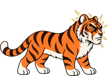

How to play Bioconnect
Bioconnect is a food-chain merge puzzle on a 5×5 meadow. Put two of the same tile side by side and they grow into the next one, all the way from a sprout to an elephant. Meanwhile the meadow keeps living: animals get hungry, plants wither and stones appear. The game ends when every square is full.
New here? Tap ✦ Practice on the title screen for three short, untimed lessons.
The basics
- Place a tile. Tap an empty square to plant the tile from your hand. Your hand refills on its own.
- Match two to grow. Two of the same kind touching side by side (up, down, left or right, not diagonally) merge into the next kind on the food chain.
- Chains. If the new tile lands next to another of its own kind, it merges again. Grass + grass makes a rabbit; if a rabbit was already beside it, the two rabbits become a fox. One move can climb several steps.
- The clock runs by itself. Press Start and the meadow ages whether you tap or not. You can pause, and there is a slower speed if you want more time to think.
- Game over comes when no empty square is left.
The food chain
Each step needs two of the one before it. Your hand only deals sprouts, grass, rabbits, foxes and deer. Everything from the zebra up has to be grown by merging.
- Sprout
- Grass
- Rabbit
- Fox
 Deer
Deer Zebra
Zebra Buffalo
Buffalo Wolf
Wolf Bear
Bear Lion
Lion
Tiger Elephant
Elephant
Hunger and eating
Every animal slowly gets hungry. When it is hungry, it eats one food tile that touches it, and that square becomes free. If nothing it eats is beside it for too long, it starves and leaves bones behind. Big animals can wait longer between meals than small ones.
| Animal | Eats |
|---|---|
| Rabbit | grass, sprouts |
| Fox | rabbits, grass, sprouts |
| Deer, zebra, buffalo | grass, sprouts |
| Wolf | rabbits, foxes, deer, zebras |
| Bear | grass, rabbits, deer |
| Lion | foxes, deer, zebras, buffalo, wolves, bears |
| Tiger | foxes, deer, zebras, buffalo, wolves, bears, lions |
| Elephant | any animal you grew by merging (rabbit to tiger) |
A hungry animal shows a warning on its tile. Feeding is also how you get points from the top of the food chain, and several animals eating on the same tick multiply each other.
Stones, bones and scrub
- Stones appear on empty squares every so often, more and more often as the game goes on.
- Bones are left where an animal starved.
- Scrub is a plant that nobody ate or merged in time.
All three take up a square until you clear them. A merge clears one blocker touching it. Every further step of a chain clears every blocker touching it. A chain of 5 or more shakes the meadow and clears every blocker within two squares, diagonals included. Squares about to be cleared show a crack and the word CLEAR before you place.
Stages and score
The game moves up one stage every 25 ticks, from Stage 1 to Stage 8. Each stage brings stones faster and multiplies points: ×1 at Stage 1, up to ×8 at Stage 8. Long chains and big meals late in the game are worth the most.
Once per game you can revive: some space is cleared and you keep your score.
The elephant
Two tigers make an elephant. It is rare, it takes up a 2×2 block, and it is the big prize. It only eats animals that were grown by merging, and it gets hungry fast, so keep raised animals near it.
Tips
- Build next to the next step. A merge lands next to the kind it will join if it can, so place where the chain can keep going.
- Leave room for food. A free square beside a hungry animal is where its meal goes. Fill every gap and it starves.
- Keep the top animal's partner close. One lion is half a tiger. Grow the second one right beside it.
- Aim chains at stones. Long chains are the best way to win back space late in the game.
- Let plants go on purpose. A withered plant becomes scrub, and a merge beside it clears it. Sometimes that is how you reopen a corner.
- Read the card at the end. After each game, the rabbit on the results card gives a tip based on what happened in that run.